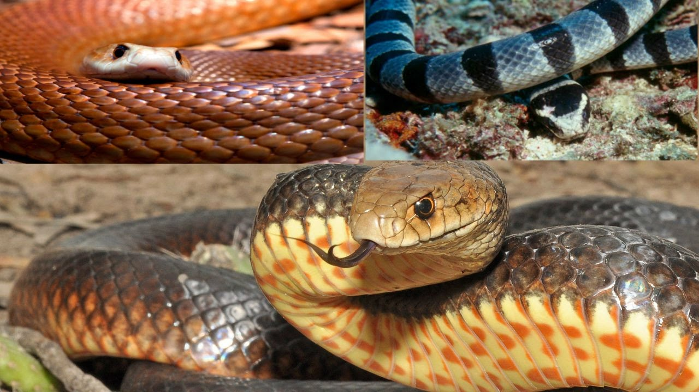

ESPECIES NO VENENOSAS
Esta clase de serpientes atacan por dominación mandibular y constricción. Abarcan cerca del 90% de serpientes y aunque no ataquen con veneno pueden asfixiar a animales mucho mas grandes como por ejemplo la pitón.
• (Morelia spilota) Pitón de alfombra
• (Python bivittatus) Pitón de Birmania
• (Python regius) Pitón real
• (Simalia amethistina) Pitón amatista australiana
• (Python sebae) Pitón africana de roca
• Boa constrictor
• Collarus caninus (Boa de árbol esmeralda)
• Epicrates cenchria (Boa arcoíris)
• Eunectes murinus (Anaconda)
